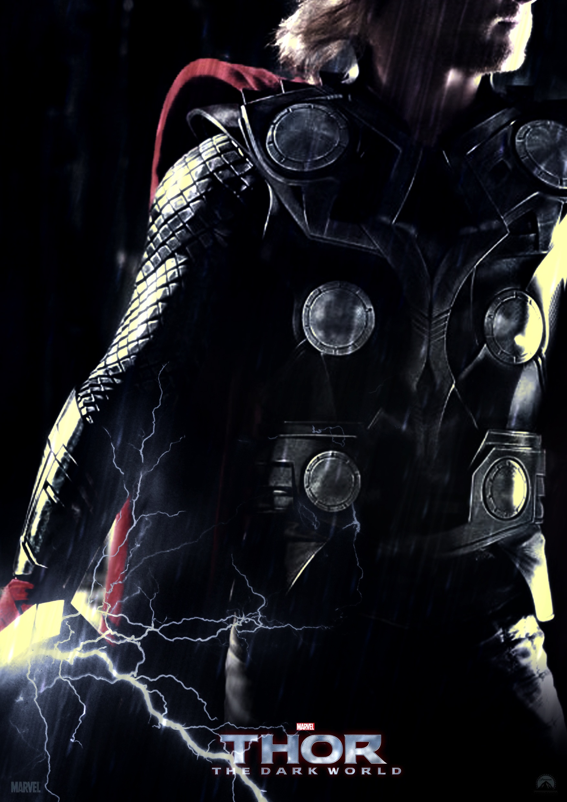

| |
|  | Gênero. Aventura. |
| Sinopse. Thor (Chris Hemsworth) e Jane Foster (Natalie Portman) terão que se adaptar a nova dinâmica intergalática, causada pela ausência de Odin (Anthony Hopkins). A trama será passada nos Nove Mundos presentes na mitologia nórdica. A direção será de Alan Taylor (Game of Thrones), que assumiu a função após a desistência de Patty Jenkins, que abandonou o barco alegando divergências criativas. |
|
| Diretor. Alan Taylor. | |
| Elenco. Chris Hemsworth (Thor), Natalie Portman (Jane Foster), Tom Hiddleston (Loki), Kat Dennings (Darcy Lewis). |
|
| Dia de Lançamento. 8 de Novembro de 2013. |
|
| |
|